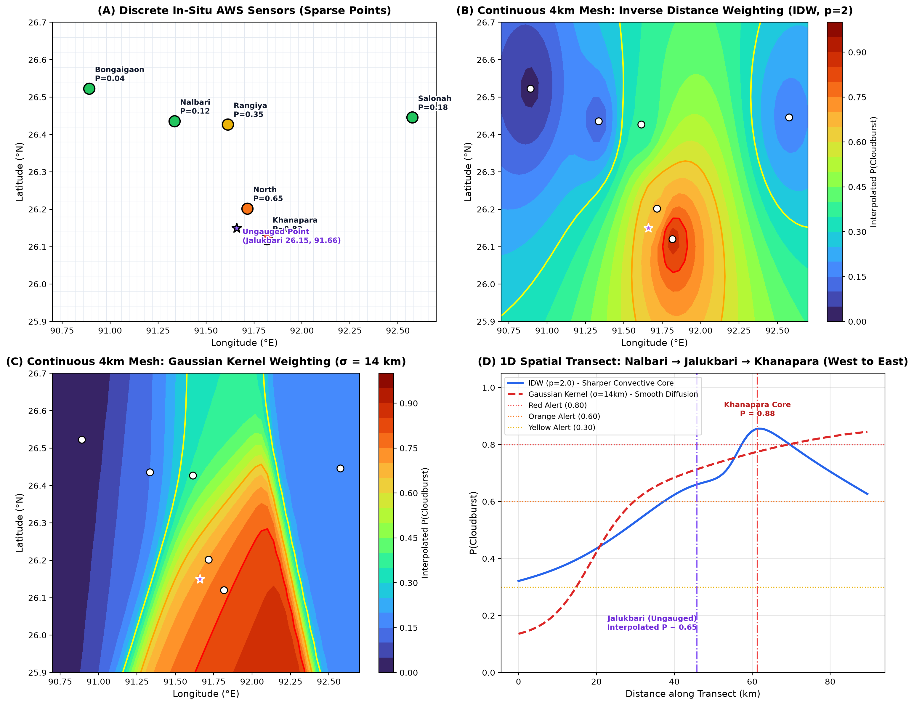

Converting sparse point-station AWS detections into a gap-free continuous convective risk field using IDW and Gaussian Kernels.
Cloudburst convective cores typically measure 4 to 5 km in diameter, whereas automated weather stations (AWS) in India's Northeast hills are spaced 15 to 50 km apart. A catastrophic 100mm storm can easily develop and dump between gauges without striking a single rain funnel.
Computes weights inversely proportional to Euclidean geodesic distance:
Physical Characteristics:
Applies a smooth radial basis function reflecting atmospheric atmospheric diffusion:
Physical Characteristics:

Evaluating an intermediate ungauged community: Jalukbari / Gauhati University (26.150°N, 91.660°E) between Khanapara Core and Nalbari AWS:
| Station Name | Measured $P(\text{CB})$ | Alert Tier | Distance to Jalukbari ($d$) | IDW Weight ($w = 1/d^2$) | Gaussian Weight ($\sigma=14\text{km}$) |
|---|---|---|---|---|---|
| North Guwahati College | 0.65 | ORANGE | 8.0 km | 0.015527 (73.2% influence) | 0.848489 (58.0% influence) |
| Khanapara (Guwahati Core) | 0.88 | RED | 15.9 km | 0.003955 (18.6% influence) | 0.524625 (35.8% influence) |
| Rangiya College | 0.35 | YELLOW | 31.1 km | 0.001035 (4.9% influence) | 0.085126 (5.8% influence) |
| Nalbari AWS | 0.12 | GREEN | 45.3 km | 0.000487 (2.3% influence) | 0.005324 (0.4% influence) |
| Bongaigaon AWS | 0.04 | GREEN | 87.0 km | 0.000132 (0.6% influence) | 0.000000 (~0.0% influence) |
| Salonah AWS | 0.18 | GREEN | 96.8 km | 0.000107 (0.5% influence) | 0.000000 (~0.0% influence) |
Even though Jalukbari has no rain gauge, the spatial engine accurately assigns it an Orange Alert (High Risk) because it lies 8 km from North Guwahati and 15.9 km from the Khanapara convective core, preventing an inter-station warning failure.